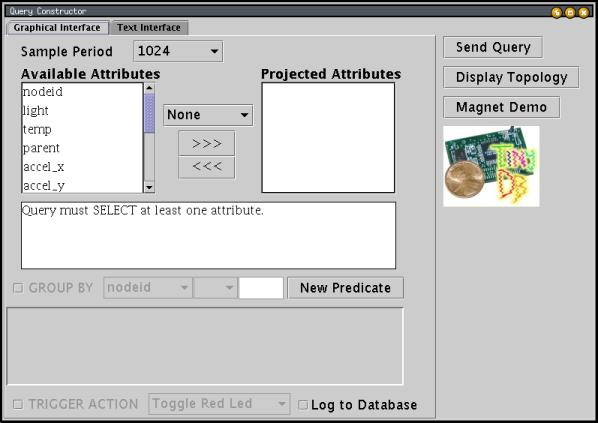
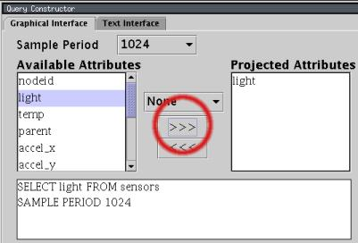
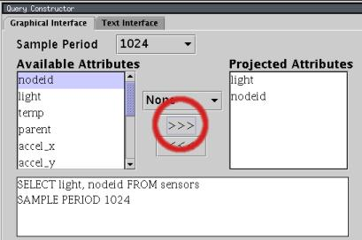
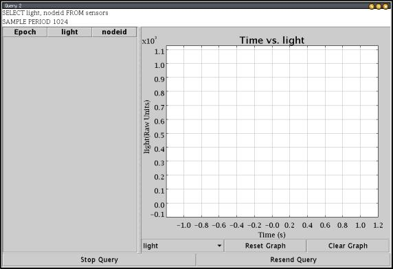
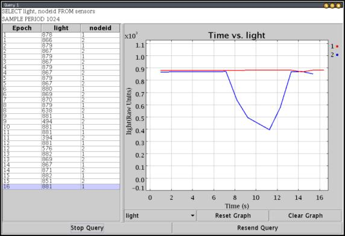
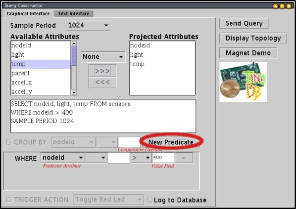
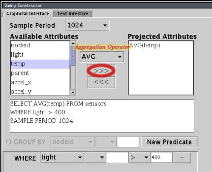

|
TinyDB A Declarative Query System for Motes Last updated 26 Sep. 2002 |
To use TinyDB, you install its TinyOS components onto each mote in your sensor network. TinyDB provides a simple Java API for writing PC applications that query and extract data from the network; it also comes with a simple graphical query-builder and result display that uses the API.
The primary goal of TinyDB is to make your life as a programmer significantly easier, and allow data-driven applications to be developed and deployed much more quickly than what is currently possible. TinyDB frees you from the burden of writing low-level code for sensor devices, including the (very tricky) sensor network interfaces.
TinyDBApp application, setting their id's to 0, 1, and 2. Turn on all three and connect the mote you programmed with id 0 to the PC serial port. (To program a mote with a specific id, run make mica install.nodeid, where
nodeid is the id you wish to program into the mote.)
You will interact with these motes using the TinyDBMain class in
tools/java/net/tinyos/tinydb. First, you need to build the
java classes -- to do this, you need to insure that several packages are in your CLASSPATH. The packages you need are JLex.jar, cup.jar, and plot.jar; all three are available in
tools/java/jars. We've included a small program to set your classpath for you, called "javapath" in the tools/java/ directory. To use it, you set the value of your CLASSPATH to the output of this command (it will prepend the new directories and jars to your current
CLASSPATH.) To use it under bash (in Cygwin or Linux), type:
Under
sh or csh you would write "setenv CLASSPATH ..." instead of "export CLASSPATH=...".
Now, build the java classes by typing the following:
This may take several minutes and will output lots of text as the TinyDB query parser is compiled.
Now, you're ready to start up the GUI! You need to run it from the tools/java
directory; type:
The TinyDB GUI should appear:

To specify a query in this GUI, you move the fields you want to extract from the sensors from the list of available attributes on the left to the list of projected attributes on the right. Let's add the light attribute: first, click on "light" in the left column, then click the">>>" button. You display should now look like:

Notice that the text of the query below the attribute list updates as
you modify the query. The SAMPLE PERIOD clause in the query
specifies that a new light reading will be delivered once every 1024 milliseconds.
You can change the sample period using the pop-up menu at the top of
the window.
Now let's add the nodeid attribute: click on "nodeid" in the left column, and then click the">>>" button again. Your display should now look like:

Unlike light, nodeid does not specify a
physical sensor reading, but instead is the id that was programmed into the
mote using the make mica install.nodeid command. You'll learn
later how to extend TinyDB with other attributes of your own creation.
Now, we're ready to run a query. Click the "Send Query" button; a result
window will appear:

As this window appears, the red LED on mote id 0 (the base station) should blink a few times, and shortly thereafter the red LEDS on motes 1 and 2 should turn on. After a few seconds, the yellow LEDS on all three motes should blink about once a second -- this indicates the query is running properly. If the LEDs don't start blinking in a few seconds, try clicking "Resend Query" to reissue the query.
Results should now be streaming into the GUI, showing the light reading at motes 1 and 2. Try covering mote 2; you should see the line representing its value on the graph fall off:

That's it for this simple introduction to TinyDB. In the next section, we will discuss the more sophisticated features of TinyDB that make it useful in a broad range of data collection applications.
The WHERE clause :
TinyDB queries can contain a WHERE clause that filters out particular readings that
are not of interest. For example, a query that finds the light and temperature readings and id's
of all motes whose light reading is
above 400 would look like:
To create such a query, use the "New Predicate" button to add a predicate, select "light" from the predicate attribute menu, select">" from the menu of comparative operators, and type 400 into the value field:

Note that you can use a WHERE clause over nodeid to send queries
to only a subset of the network.
Aggregation Predicates : TinyDB also allows you to compute aggregates over readings being reported by several nodes in a query. For example, to compute the average temperature reading of all the sensors where the light is above 400, you would issue the query:
To specify this query, select "AVG" in the aggregation operator menu before moving temp into the projected attributes list:

TinyDB computes this query via an efficient in-network approach, where sensors aggregate their own readings with readings from their neighbors and forward those aggregate values towards the base station.
You've now seen how to pose a simple query with filtration and aggregation predicates. In the next section, you'll learn how to write a small, standalone program to run TinyDB queries.
SELECT light FROM sensors.
First, we'll look at the whole program and then we'll see how the individual pieces work (this
application is available in tools/java/net/tinyos/tinydb/DemoApp.java):
To try out this program, set up your motes as above (making sure you close any open TinyDB windows) and type
package net.tinyos.tinydb; import net.tinyos.tinydb.parser.*; import java.util.Vector; import java.io.*; public class DemoApp implements ResultListener{ public DemoApp() { try { TinyDBMain.initMain(); //parse the query q = SensorQueryer.translateQuery("SELECT light", (byte)1); //inject the query, registering ourselves as a listener for result System.out.println("Sending query."); TinyDBMain.injectQuery( q, this); } catch (IOException e) { System.out.println("Network error."); } catch (ParseException e) { System.out.println("Invalid Query."); } } /* ResultListener method called whenever a result arrives */ public void addResult(QueryResult qr) { Vector v = qr.resultVector(); //print the result for (int i = 0; i < v.size(); i++) { System.out.print("\t" + v.elementAt(i) + "\t|"); } System.out.println(); } public static void main(String argv[]) { new DemoApp(); } TinyDBQuery q; }
java.net.tinyos.tinydb.DemoApp from the tools/java/
directory. You should see output like:
Now, let's look at the program in more detail. First, notice that the
DemoApp class implements the ResultListener
interface. The addResult(...) method is the only member
of this interface, and it will be called whenever a result arrives for
any query which DemoApp has registered. We'll see how registration
works in a moment.
The first lines of the DemoApp() constructor initialize TinyDB,
parse the query, and inject the query into the network:
The call to
TinyDBMain.initMain(); //parse the query q = SensorQueryer.translateQuery("SELECT light", (byte)1); //inject the query, registering ourselves as a listener for result System.out.println("Sending query."); TinyDBMain.injectQuery( q, this);
TinyDB.initMain() reads the TinyDB configuration file
and sets up network communication. By default, it opens its own connection
to the serial port, although it can be configured to share that connection
via a SerialForwarder (see the TinyDB documentation
on the configuration file.)
Next, the SensorQueryer.translateQuery(..) call converts
the specified SQL query into a TinyDBQuery object; the second parameter
((byte)1) specifies that the query id for this query should be 1; this
id can be used to cancel or modify the query after it has been injected.
Finally, the TinyDBMain.injectQuery(..) actually sends the query into
the network and starts it running. The second parameter, this,
specifies that the DemoApp object should be registered as
a listener for results from this query.
That's it! The query is now running. Whenever a result arrives for this query,
the addResult method will be called to print out each field of
each result that arrives.
By now, you've learned how to use the TinyDB GUI and write simple applications that interact with TinyDB motes. In the next section, you'll learn how to extend TinyDB with new attributes that can be queried via the TinyDB query interface.
TinyDB comes with a builtin command for adding constant attributes. To add a constant attribute, click the "Add Attribute" button in the Mote Commands window. A dialog box will pop up asking you to fill in the attribute name, type and a constant value. Simply fill them in and click the "OK" button. The green LED on the motes should toggle once if they receive the "Add Attribute" command. The new attribute should be ready for use. You can now run queries over that attribute.
To add an attribute for a specific mote, you can uncheck the "Broadcast" check box in the Mote Commands window, then fill in a Target Id. If a constant attribute of the same name has already been registered, the old constant value of the attribute will be overwritten with the new value.
Adding non-constant attributes will involve some NesC programming using the TinySchema API. The easiest way to get started is to copy and modify some builtin attributes implemented in tos/lib/Attributes.